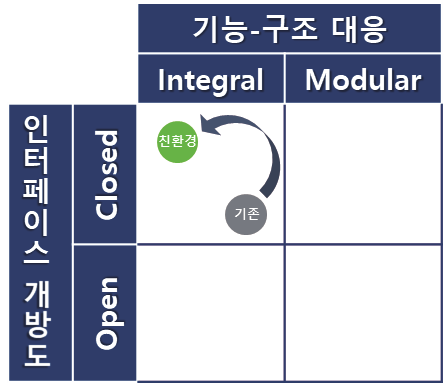
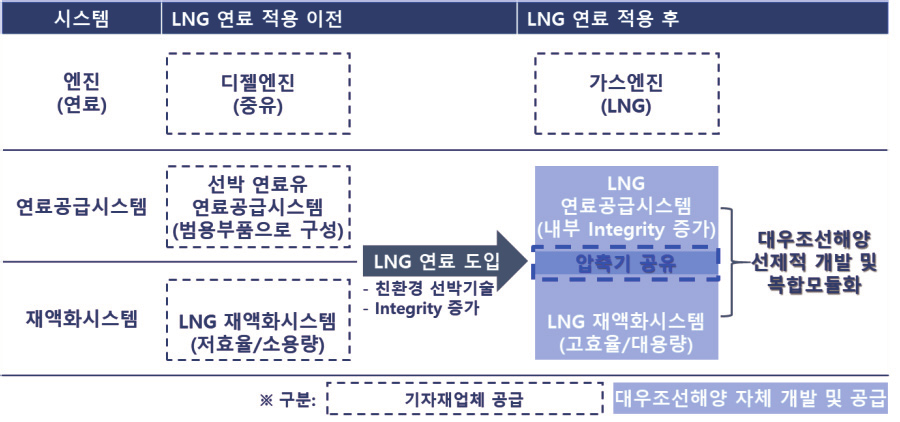
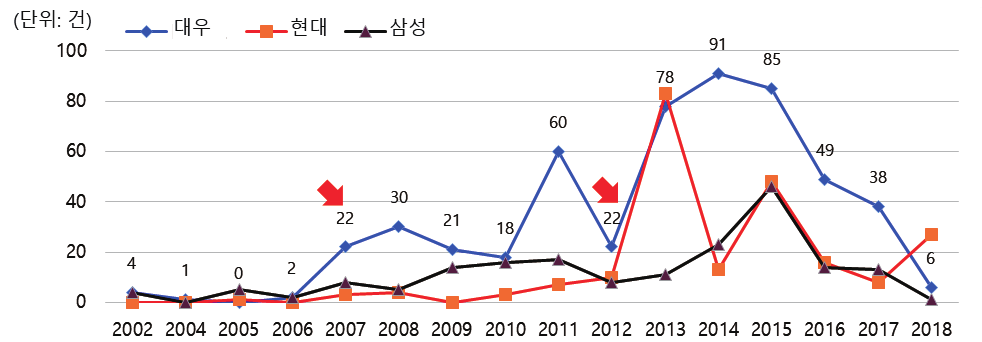
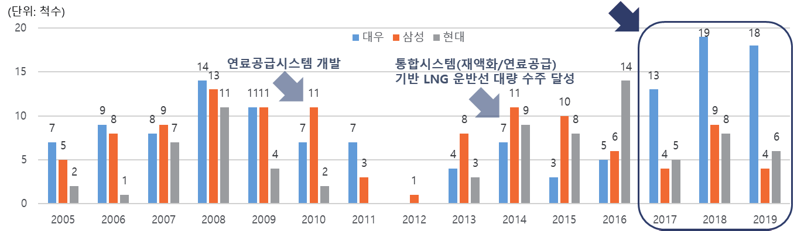

환경규제의 강화에 따라 국제 해운업계에서도 선박 배출 온실가스에 대한 규제가 지속 강화되고 있다. 이를 만족시키기 위해 친환경 선박기술의 연구개발이 활발하게 진행되고 있으며, 그 중에서도 LNG를 연료로 사용해 온실가스를 저감하는 방안이 비화석연료 상용화 이전까지의 가교기술(Bridge Technology)로서 각광받고 있다. 본 연구는 친환경 선박기술이 도입되는 과정에서 선박의 제품 아키텍처와 주요 시스템에 일어난 변화의 양상을 살펴보고, 이에 대응하기 위해 조선업체가 취한 기술개발전략의 특징을 대우조선해양의 LNG 운반선 핵심 기술 개발 사례를 중심으로 분석한다.
- 환경규제의 강화에 따라 국제 해운업계에서도 선박 배출 온실가스에 대한 규제가 지속 강화되고 있으며, 해운·조선업계에서는 이를 만족시키기 위해 친환경 선박기술의 연구개발이 활발하게 진행되고 있다. 그 중에서도 LNG를 연료로 사용하여 온실가스를 저감하는 방안이 비화석연료 상용화 이전까지의 가교기술(Bridge Technology)로서 각광받고 있다.
- 본 연구는 친환경 선박기술이 도입되는 과정에서 선박의 제품 아키텍처와 주요 시스템에 일어난 변화의 양상을 살펴보고, 이러한 변화에 대응하기 위해 조선업체가 취한 기술개발전략의 특징을 대우조선해양의 LNG 운반선 핵심 기술 개발 사례를 중심으로 분석한다.
- 친환경 기능이 추가로 요구되면서 선박의 복잡도(Integrity)가 증가해 Closed Integral·Integral Inside-Integral Outside 성격이 강해졌으며, 대우조선해양은 핵심 기술분야(LNG 연료공급시스템·재액화시스템)의 선제적 개발과 복합모듈화를 통해 경쟁우위를 점했다.
- 이를 바탕으로 기존 전략에 대한 보완점과 향후 나아가야 할 방향성 — 핵심 시스템 공급 범위를 개조(Retrofit) 시장 등 외부로 확대하고 아키텍처를 Integral Inside–Modular Outside로 발전시키는 것 — 도 함께 고찰한다.
1. 서론: 선박과 조선산업의 역사
선박의 발달은 추진 방식의 변화와 밀접한 관계에 있다. 노를 젓는 노선, 바람을 이용한 범선을 거쳐 기계의 힘을 이용하는 동력선 시대에 이르렀고, 동력선의 연료는 석탄, 석유를 거쳐 현재는 환경 규제 강화에 따라 저탄소 연료인 LNG의 적용이 확대되고 있다. 장기적으로는 전기추진, 암모니아, 수소 등의 무탄소 연료로 대체될 전망이다. 한국의 조선산업은 1967년 '조선공업진흥법' 제정으로 도약의 기반이 마련됐고, 1970년대 '조선 빅3'(대우·현대·삼성)가 설립된 이후 1990년대 중반 LNG 운반선 등 고부가가치 제품시장에 본격 진출하여 2000년대에 들어서는 수주량뿐 아니라 설계/건조 기술에서도 세계를 선도하고 있다.
2. 연구 배경 및 목적
2.1 친환경 선박기술의 등장
본 연구는 국제해사기구(IMO)의 정의에 따라 신조(New-build) 선박의 에너지효율설계지수(EEDI, Energy Efficiency Design Index)를 만족하는 선박을 친환경 선박으로 정의한다. 국제해사기구는 기준년도인 2008년 대비 신조선박의 이산화탄소 배출을 2015년부터 10%(EEDI Phase I), 2020년부터 20%(Phase II), 2025년부터 30%(Phase III)로 단계적 감축하여 2050년까지 50% 이상 감축한다는 목표를 설정하고 있다 — 기존의 기술 및 선박의 운영 방식으로는 만족이 불가능한 수준이다.
상용화된 대표 기술은 LNG 연료 추진이다. LNG는 기존 선박 연료유 대비 황산화물 99%, 질소산화물 85%, 이산화탄소 20%가 적은 친환경 연료로, 비화석연료 상용화 이전까지의 가교기술로서 적용이 지속 확대되고 있으며 2022년에는 사용량이 2018년 대비 5배가량 상승할 것으로 전망된다.
2.3 이론적 배경 — 아키텍처 이론
제품 아키텍처론은 제품에 요구되는 기능을 각 구조(부품)에 어떻게 배분하고 부품간 인터페이스를 어떻게 디자인할 것인가에 관한 기본적인 설계사상이다. 일본의 대표적인 아키텍처 이론가인 후지모토 타카히로 교수는 제품 기능-구성요소 대응 관계와 인터페이스 개방도에 따른 기본 분류(Integral/Modular × Closed/Open), 그리고 이를 자사 제품과 고객 제품 아키텍처 간 관계로 확장시킨 심층 분류를 제시한 바 있다.
3. 선박의 제품 아키텍처 변화
3.1 아키텍처 기본 분류의 변화
선박은 부양·추진·강도·적재·복원·운동·조종의 7개 기본 기능과 SFI Group Code 기준 8개 구성요소(Main Group)가 다대다(多對多) 대응 관계에 있는 Closed Integral 아키텍처의 성격을 가진다. 친환경 선박의 경우 온실가스 배출저감을 위해 대체 연료의 적용, 에너지효율향상을 위한 기능이 추가로 요구되는데, 이러한 추가 요구 기능 역시 구성요소 간 복합적 작용을 통한 구현이 필요하므로 전체적인 복잡도(Integrity)가 증가하여 Closed Integral 성격이 더욱 강해지게 된다.

3.2 아키텍처 심층 분류의 변화
고객사와의 관계 관점에서 보았을 때 선박은 양산품이 아닌, 고객의 요구사항에 따라 맞춤형으로 제작하여 공급하는 Integral Outside의 구조를 가지고 있다. 친환경 선박기술이 적용되기 시작하면서 연료의 선택, 에너지효율증가를 위한 조치, 기타 배출가스 저감장치 설치 등 고객의 요구사항은 보다 다양해졌고, 조선소는 보다 많은 미세조정을 통해 선박을 설계·건조할 필요가 있어 Integral Inside-Integral Outside(IIIO)의 성격이 더욱 강화되고 있다.
4. 대우조선해양 혁신 사례 연구
4.1 친환경 LNG 운반선의 핵심 기술
LNG 운반선은 천연가스를 영하 163℃로 냉각해 부피를 약 600배 줄여 대량 운반하는 선박이다. 100% 단열은 불가하므로 자연기화로 인해 LNG 증발가스가 발생하는데, 이를 그대로 두면 화물창 내부 압력이 상승해 폭발할 수 있으므로 화물창의 자연기화율을 최소화하고 발생한 증발가스를 화물창으로 다시 주입하거나 연료로 활용하는 것이 핵심 기술이다. 핵심 시스템은 LNG 화물창(멤브레인 타입, 프랑스 GTT가 라이선스 독점 공급), 가스엔진(2012년 독일 MAN ES 고압엔진, 2015년 핀란드 Wartsila 저압엔진 출시), LNG 연료공급시스템, LNG 재액화시스템의 네 가지다. 화물창과 가스엔진은 해외 선도 업체가 장악한 분야인 반면, 연료공급시스템과 재액화시스템은 대우조선해양이 연구에 집중하여 자체 개발 및 상용화에 성공한 시스템이다.
4.2 대우조선해양의 LNG 기술개발 역사
대우조선해양은 1995년 국내 최초로 멤브레인 타입 화물창이 적용된 LNG 운반선을 인도하며 첫 실적을 쌓았다. 당시 모스 타입 화물창이 대부분이었으나, 효율 측면에서 우수한 GTT의 멤브레인 타입이 향후 시장을 장악할 것으로 전망하고 국내 조선소 최초로 도입한 것이다. 이후 2005년 세계 최초 자체 재기화 기능 탑재 LNG 운반선(LNG RV) 인도, 2010년 세계 최초 고압가스엔진용 연료공급시스템 개발, 2013년 독일 엔진업체 MAN ES에 자체 개발 연료공급시스템 특허 라이선스 공급 계약(세계 조선소 최초), 2014년 자체 극저온 가스실험센터 건립(세계 조선소 최초), 2016년 세계 최초 고압가스엔진 장착 LNG 운반선 건조/인도로 이어졌다. 2021년 4월 Clarksons 기준 대우조선해양의 LNG 운반선 누적 인도는 184척으로 세계 1위다.
4.3 기술개발전략 분석 — 선제적 개발과 복합모듈화
2012년 세계 최초의 선박용 가스엔진이 출시되기 전, LNG 화물창은 프랑스 GTT가 독점 공급하고 있어 대우조선해양, 현대중공업, 삼성중공업 모두 상호 간 차별화를 두기 어려운 상황이었다. 이때 대우조선해양은 LNG 연료의 적용이 꾸준히 확대될 것이라는 전망, 그리고 선박용 엔진의 선도 업체인 독일 MAN ES가 가스엔진을 개발 중에 있는 점을 고려하여 이와 연계한 시스템을 선제적으로 개발하는 전략을 수립하고 실행한다.
LNG 연료공급시스템(사례 I)은 기존에 엔진 내부에서 이루어지던 연료의 가압 공정이 연료공급시스템에서 이루어진다는 점에서 기존 범용 장비 기반 시스템과 큰 차이가 있다. 대우조선해양은 MAN ES가 가압 공정의 엔진 내 구현에 어려움을 겪고 있다는 점에 착안, 엔진에 고압가스를 공급할 수 있는 별도의 시스템 개발에 집중해 세계 최초로 개발에 성공했고, 엔진과 연료공급시스템을 패키지화하여 공급하고자 하던 MAN ES에 라이선스를 제공하는 계약을 체결하기도 하였다. 가압 공정을 추가하는 과정에서 내부 Integrity가 높아졌으며, 핵심 장비인 극저온 고압펌프와 고압기화기는 해외 선도 업체들과의 공동 연구로 개발한 뒤 대부분 구성품의 국산화에도 성공했다.
LNG 재액화시스템(사례 II)은 증발가스를 액화시켜 화물창으로 재주입하는 시스템으로, 기존에는 육상용 시스템을 일부 개조한 비효율적인 방식이 쓰이고 있었다. 대우조선해양은 가스엔진 도입과 함께 개발했던 LNG 연료공급시스템에 이미 고용량의 압축기능이 있다는 점에 착안해 이를 활용하는 새로운 개념의 재액화시스템을 개발했다. 공정에 소모되는 전력을 대폭 감소시켜 비약적인 에너지 절감을 달성했을 뿐 아니라 별도 압축기를 제거해 비용·공간 효율도 크게 높였다. 연료비 절감 및 화물 보존에 따른 경제적 효과는 대형 LNG 운반선 1척당 연간 약 500만 달러에 이른다.

이러한 집중은 특허 데이터로도 확인된다. 대우조선해양이 연료공급시스템 개발에 착수한 2007년, 그리고 재액화시스템 개발에 착수한 2012년부터 관련 특허의 출원이 증가하는 경향을 확인할 수 있으며, 해당 기간 R&D 비용 역시 지속 증가했다.

4.4 Integrity 증가에 대한 대응 노력
대우조선해양은 2014년 조선소로는 세계 최초로 자체 극저온 가스실험센터를 구축하여 LNG 및 기타 극저온 가스 관련 시스템 개발 시 시제품의 성능·내구성을 자체적으로 테스트할 수 있게 되었다. 개발 일정을 유연하게 가져가고 실제 선박 적용 시 발생할 문제점을 사전에 인지·해결하는 것이 용이해졌다(현대중공업은 2017년, 삼성중공업은 2021년에야 유사 설비를 구축했다). 고객 커뮤니케이션 측면에서는 인도한 제품의 보증기간 내 6개월 단위로 'Voice of Customer'를 실시해 본사 직원뿐 아니라 실제 선박을 운용하는 선원들의 Feedback까지 접수하고 있으며, 2012년부터는 세계 최대 가스산업분야 박람회인 'GASTECH' 기간 중 고객사 Senior Engineer 및 Top Management Level이 참석하는 'LNGC User Forum'을 개최해 장기적인 방향성을 상호 토론하고 있다.
4.5 주요 성과
연료공급시스템과 재액화시스템의 복합모듈화를 완료한 시점 이후부터 본격적으로 성과를 올리게 되면서 2014년에는 전세계에 발주된 LNG 운반선 중 약 절반에 해당하는 37척을 수주했으며, 2017년부터의 인도 실적에서는 경쟁사 대비 월등히 앞서 나갔다. 연료공급시스템은 2013년 IR52 장영실상과 2014년 대한민국기술대상·10대 기계기술상을, 재액화시스템은 2015년 IR52 장영실상('15년 최우수)을 수상하며 LNG 기술 선도 기업의 이미지를 제고했다. 국내 조선 3사의 기술 우위가 지속되면서 전세계 LNG 운반선 시장에서 한국은 경쟁국인 중국, 일본과의 현격한 격차를 유지하고 있다.

5. 결론 및 시사점
환경규제 대응을 위한 친환경 선박기술의 도입에 따라 선박에 요구되는 기능이 다양해지면서 제품의 Integrity가 증가되었다. 대우조선해양은 오랜 기간 축적한 LNG 운반선에 대한 경험과 노하우를 바탕으로 세계 최초로 LNG 연료공급시스템을 개발한 후 이와 통합된 형태의 새로운 재액화시스템을 개발하는 복합모듈화 기술개발전략을 통하여 시장에서의 경쟁우위를 점하게 되었다. 한국의 조선산업이 세계 정상을 차지한 지는 오래되었으나 지금까지 그 범위가 선박 완성품의 설계 및 건조에 한정되고 핵심 기자재는 해외 선도 업체에 의존하는 한계가 있었는데, 대우조선해양은 핵심 기술의 자립화에 성공하며 기존의 선박 완제품 공급자 역할에서 범위를 확장하여 핵심 시스템의 공급자 역할까지 가능하게 된 것이다.
- 복합모듈화 전략의 유효성: 제품의 복잡도(Integrity)가 증가하는 시장에서, 자체 개발이 가능하고 시장 수요를 불러일으킬 수 있는 핵심 기술분야를 선제적으로 개발·통합 구성하는 복합모듈화가 경쟁우위의 원천이 되었다.
- 완제품 제조에서 핵심 시스템 공급으로: LNG 운반선 핵심 시스템의 자체 개발과 다수의 적용 실적으로, 선박 완제품 공급자에서 핵심 시스템 공급자 역할까지 사업 범위가 확장되었다.
- 남은 과제: 현재까지 핵심 시스템의 공급 범위는 자사 건조 선박 또는 라이선스 형태의 외부 제공에 국한되어 있다. 해상환경규제가 운항 중인 선박까지 확대되며 개조(Retrofit) 시장의 성장이 전망되는 만큼, 시스템 단위 제품의 외부 판매 기능을 갖추고 핵심 시스템의 Integral Inside–Integral Outside 제품 아키텍처를 Integral Inside–Modular Outside로 발전시키기 위한 노력이 필요하다.